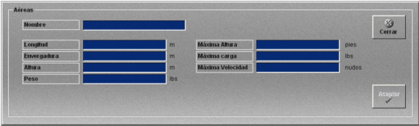

Plataformas Aéreas
La creación y edición de plataformas aéreas se realiza mediante la siguiente ventana.

Para este tipo de plataformas se definen los siguientes datos:
Nombre: Nombre de la plataforma.
Formato: caracteres alfanuméricos.
Longitud: Longitud de la unidad aérea.
Unidades: metros
Rango: 0.1 – 100.0
Envergadura: Envergadura de la unidad aérea.
Unidades: metros
Rango: 0.1 – 100.0
Altura: Altura de la unidad.
Unidades: metros
Rango: 0.0 – 100.0
Peso: Peso de la unidad.
Unidades: libras
Rango: 0.0 – 1000000.0
Máxima altura: Altura máxima que puede alcanzar la unidad.
Unidades: nudos
Rango: 0.0 – 100000.0
Máxima carga: Carga máxima que puede transportar la unidad.
Unidades: libras
Rango: 0.0 – 1000000.0
Máxima velocidad: Velocidad máxima de la unidad.
Unidades: nudos
Rango: 0.0 – 10000.0